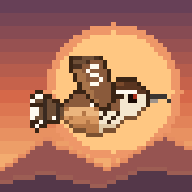

You're a cactus wren, Arizona’s state bird, foraging your way through Tucson, Bisbee and Tombstone.
Tap or press Space to continue
Type a nickname to fly
Defend your scoreGet a ping when someone beats your best.
An independent, non-commercial game starring Arizona's state bird.Made by Abhiman Guptaabhimangupta.com@abhimangupta
Defend your scoreGet a ping when someone beats your best.

Get the appOpen it in one tap from your home screen, and get pinged when someone beats your score.
Type a nickname to fly
or tap anywhere / Space
Desert fact:
An independent, non-commercial game.Made by Abhiman Guptaabhimangupta.com@abhimangupta
Then it opens in one tap, like an app.